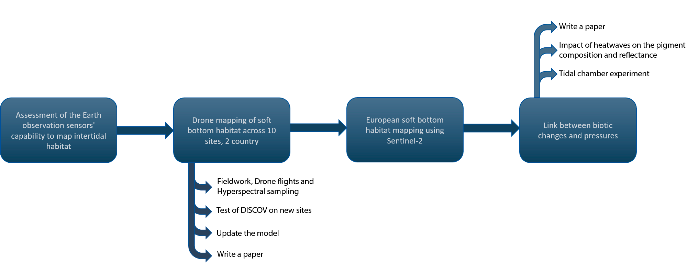
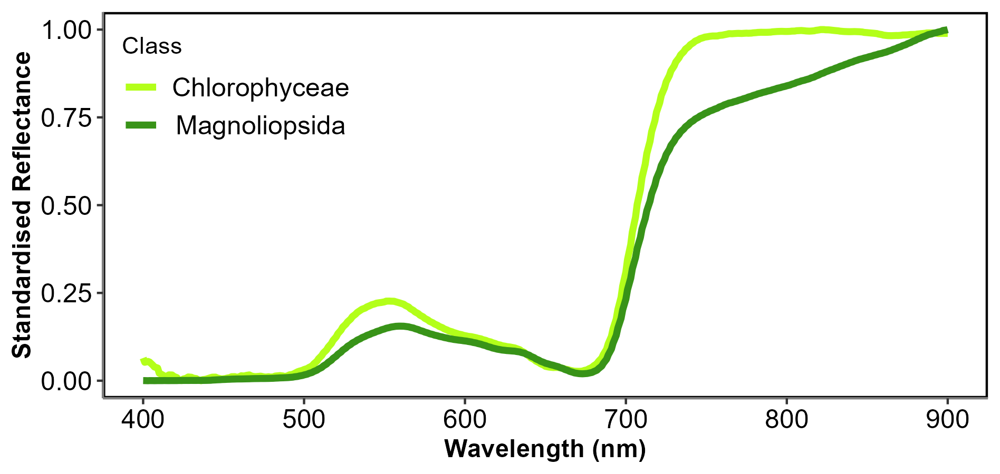
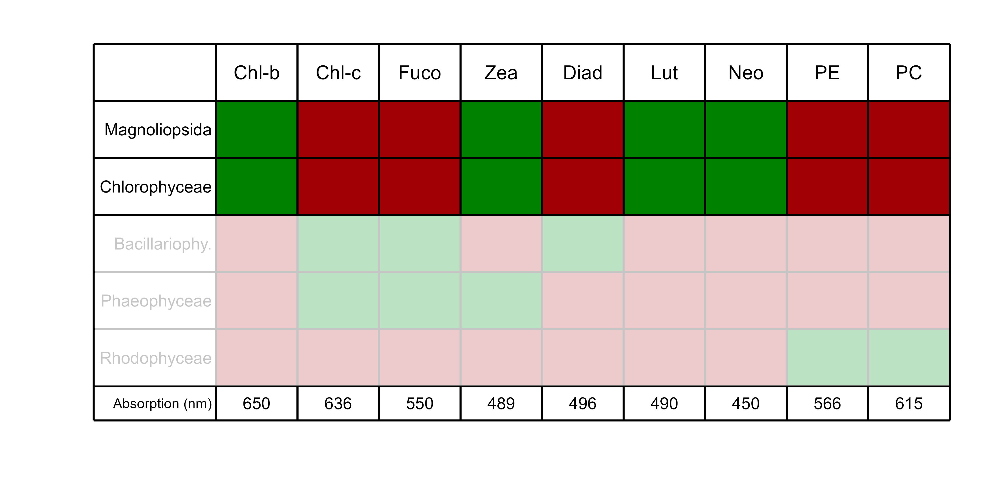
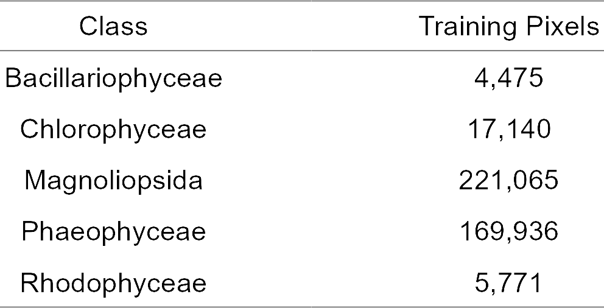
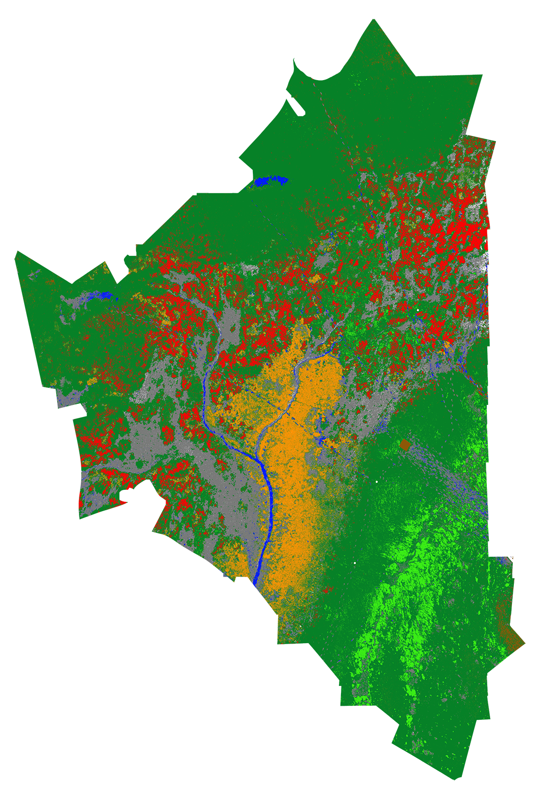
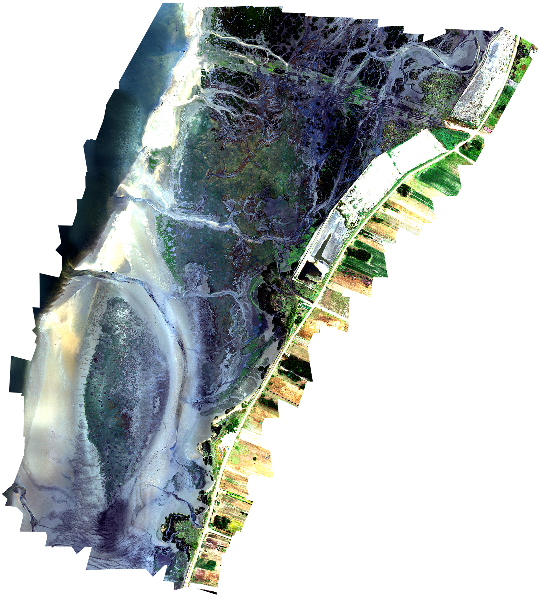

Multiscale remote sensing of intertidal vegetation of European coasts in response to natural and anthropogenic pressures.
Start of the thesis in January 2022
Follow-up meeting
11th of June 2024
Simon Oiry
Phd student
Supervisor : Laurent Barillé Co-supervisor : Pierre Gernez
Members of the Commitee : Stanislas Dubois & Emanuele Organelli


Coastal zone : areas under anthropogenic pressure
1 2 3 4 5 6
1


- Densely populated areas:
- 4% of the french territory
- 10% of the french population
- Many economic activities:
- Many anthropogenic pressures:
- Shoreline changes and Coastal Erosion
- Modification of hydrological properties
- Input of nutrients or hazardous substances
Quillien et al. (2015)
- Introduction of energy (Noises, Temperature, vibration…)
- Non-indigenous species introduction
- Extraction of species by commercial fishing
- …
Intertidal habitats
1 2 3 4 5 6
2


Aveiro Lagoon, Portugal


- Nurserey and habitat of many species
- Some species pose a threat to these habitats


- Soft Bottom and Hard Bottom
- Multiple classes of vegetation
- Pheophyceae, Brown algae
- Pheophyceae, Brown algae
- Chloropyceae, Green algae
- Pheophyceae, Brown algae
- Chloropyceae, Green algae
- Magnoliopsida, Seagrasses
- Pheophyceae, Brown algae
- Chloropyceae, Green algae
- Magnoliopsida, Seagrasses
- Bracilariophyceae, Microphytobenthos
- Pheophyceae, Brown algae
- Chloropyceae, Green algae
- Magnoliopsida, Seagrasses
- Bracilariophyceae, Microphytobenthos
- Rhodophyceae, Red algae
- Protection against erosion
- Carbon fixation
Improve the protection
- Water Framework Directive (2001)
- Marine Strategy Framework Directive (2008)
Good Knowledge of soft bottom intertidal habitats
How to monitor this ecosystem ?
1 2 3 4 5 6
3


- in situ Survey
– Time-consuming
– Hard to access
– Expensive
– Low extent and temporal resolution
- Remote Sensing Survey
– Cost effective
– Good coverage/Time ratio
Papathanasopoulou, E., Simis, S., Alikas, K., Ansper, A., Anttila, S., Jenni, A., Barillé, A.-L., Barillé, L., Brando, V., Bresciani, M., Bučas, M., Gernez, P., Giardino, C., Harin, N., Hommersom, A., Kangro, K., Kauppila, P., Koponen, S., Laanen, M., … Zoffoli, M. L. (2019). Satellite-assisted monitoring of water quality to support the implementation of the Water Framework Directive. In EOMORES white paper. https://doi.org/10.5281/zenodo.3463051
Muller-Karger et al. (2018)

- Standardized measurements or indicators to monitor biodiversity
- Standardized measurements or indicators to monitor biodiversity
- Key metrics to monitor and assess biodiversity changes
How to monitor this ecosystem ?
1 2 3 4 5 6
3

Table adapted from Muller-Karger et al. (2018)
Objectives of the thesis
1 2 3 4 5 6
4
- Map spatial and temporal variations in plant biodiversity of intertidal zones with a focus on green macrophytes
- Map spatial and temporal variations in plant biodiversity of intertidal zones with a focus on green macrophytes
- Map spatial and temporal variations in plant biodiversity of intertidal zones with a focus on green macrophytes
- Revisit time: 3 to 5 days
- Archive since 2016
- Analyze natural and human factors responsible for changes.


Sea Surface Temperature
Marine Heat Wave
River Discharge

Done !

Upcoming !
Challenges to map intertidal vegetation
1 2 3 4 5 6
6



Phaeophyceae
Chlorophyceae
Magnoliopsida
Bacillariophyceae
Rhodophyceae
Discriminate green macrophytes using remote sensing
1 2 3 4 5 6
7

Discriminate green macrophytes using remote sensing
1 2 3 4 5 6
7

More than 300 spectra
2 altitudes = 2 purposes
1 2 3 4 5 6
10
2 altitudes = 2 purposes


10m
10m
~ 1.5 millions pixels

~ 500 000 training pixels
Model Building
1 2 3 4 5 6
11
~ 500 000 training pixels


Fast.ai workflow
Neurtal Network
- Tuned with 12 Epoch
- More than 26 000 trainable parameters

Drone Intertidal Sediment Classification Of Vegetation
Prediction
1 2 3 4 5 6
12





Variable Importance
1 2 3 4 5 6
15


Accuracy = a
Accuracy = a ± b
b
B10 is not important for the model
b
B10 is important for the model
Submission to a Journal
1 2 3 4 5 6
16

- Remote Sensing of environment
- Rejected : Lack of a strong remote sensing component
- Science of the Total Environment
- Rejected : Paper is focus on the development and evaluation of methodology, which does not align well with the scope of our journal.
- The Journal of Photogrammetry and Remote Sensing
- Submitted
The Model
1 2 3 4 5 6
17
- Data avaibility in the paper
- Pre-trained model DISCOV V1, ready to be used
- Training dataset
- Validation dataset
- Script to train a new model with an updated training dataset
- Script to predict on new data


INVASEA - Study sites
1 2 3 4 5 6
19
Brittany Estuaries, October 2023 and April 2024
- La Ria d’Etel, 2 days in Octobers 2023
- Le Belon, 1 day in April 2024
- L’Aven, 1 day in April 2024
- Pont l’Abbe, 1 day in April 2024
Ria d’Etel, 14th and 15th of October 2023

Le Belon, 10th of April 2024
L’Aven, 11th of April 2024
Pont l’Abbe, 12th of April 2024
Northern Spain Estuaries, June 2024
- Santander, the 22nd and 23rd of June 2024
- Somewhere between Santander and Vigo, the 25th and 26th of June 2024
- Vigo, the 27th and 28th of June 2024